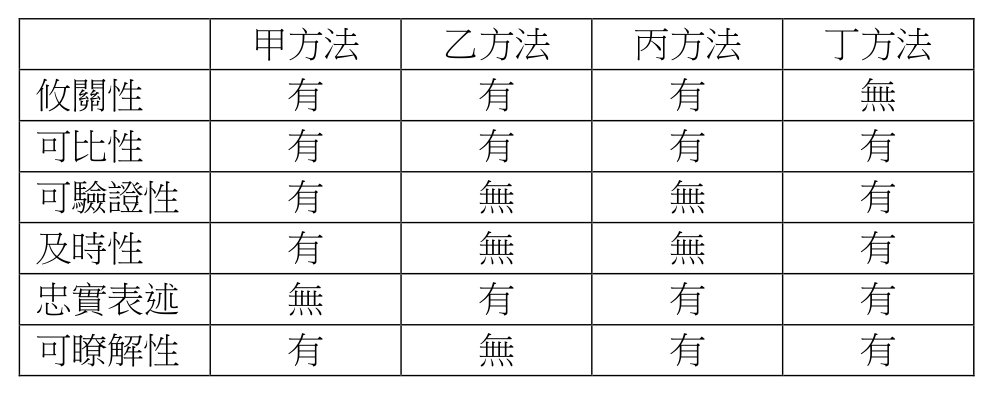

開卷有益 ／
會計師 ／ 中級會計學 ／ 109 年109 年會計師中級會計學試題與答案
這一頁是民國 109 年會計師中級會計學的整份歷屆試題，共 25 題，題目與標準答案出自考選部「國家考試試題及測驗式試題答案」開放資料，其中 25 題附有詳解。以下逐題列出題幹、選項與答案；要計時作答或記錄成績，請用線上練習。
考選部原始場次代碼：109140
線上作答這一科 →
全部 25 題
第 1 題
下列有關一般用途財務報導之說明何者錯誤？
（A） 現有及潛在投資者、貸款人及其他債權人為主要之使用者（B） 管理當局因有內部資訊，不須僅依賴一般用途之財務報告（C） 財務報告係基於估計、判斷及模式而非基於精確之描述（D） 一般用途財務報告為顯示報告個體之價值而設計答案：（D）
詳解與考點 正解：一般用途財務報導的目的在提供現有及潛在投資者、貸款人及其他債權人作資源提供決策所需的有用資訊，不是為直接顯示報導個體的價值而設計，故 D 錯誤，為正解。
A：現有及潛在投資者、貸款人及其他債權人是一般用途財務報告的主要使用者，敘述正確。
B：管理當局可取得內部資訊，並非僅依賴一般用途財務報告，敘述正確。
C：財務報告須使用估計、判斷及模式，並非精確描述所有經濟現象，敘述正確。
本題考點：一般用途財務報導目的——提供資源提供者決策有用的財務資訊；主要使用者——現有及潛在投資者、貸款人及其他債權人；企業價值區辨——財務報告不是專為顯示報導個體價值而設計。
第 2 題
下列有關財務報表揭露之敘述何者正確？
（A） 若國際財務報導準則之特定規定不足使財報使用者了解特定交易、事項或其他情況之影響時，企業須考量提供額外之揭露（B） 對國際財務報導準則中已明確規定須揭露之資訊，即使該資訊不重大，企業仍須提供該揭露（C） 企業須依循綜合損益表與資產負債表中單行項目之順序表達附註（D） 重大會計政策之揭露不得彙總於同一附註答案：（A）
詳解與考點 正解：若國際財務報導準則的特定揭露規定不足以讓使用者了解特定交易、事項或其他情況的影響，企業須考量提供額外揭露，A 正確。
B：重大性原則適用於揭露；即使準則明定須揭露，不重大資訊通常無須提供，故此敘述錯誤。
C：附註不必依綜合損益表與資產負債表的單行項目順序表達，企業可採有助理解的編排，故錯誤。
D：重大會計政策可彙總於同一附註揭露，不得彙總的說法錯誤。
本題考點：額外揭露——特定規定不足以解釋交易影響時，應考量補充資訊；重大性——不重大資訊不因一般揭露規定而當然必須揭露；附註表達——可依有助理解的方式編排及彙總重大會計政策。
第 3 題
下列有關財務報表表達之敘述，何者正確？
（A） 公司於20X1年8月1日購買將於20X2年3月31日到期之國庫券，該國庫券在20X1年12月31日之資產負債表中應以約當現金表達（B） 甲公司有一長期銀行借款將於20X1年6月1日到期，甲公司在20X1年1月15日即與原債權銀行達成協議，將該借款展期至20X3年2月1日。甲公司於20X1年5月10日公布之20X1年第一季（三月底）財務報表中，該負債應被歸類為長期負債（C） 甲公司在20X1年底向乙銀行借款，乙銀行要求甲公司在乙銀行設立存款帳戶並維持$300,000之最低餘額直至該借款到期，該借款將於三年後到期。甲公司在20X1年資產負債表中，應將存放於乙銀行之$300,000存款歸類為流動資產（D） 甲公司有一長期銀行借款將於20X1年2月1日到期。甲公司在20X1年1月15日即與原債權銀行達成協議，將該借款展期至20X3年2月1日。甲公司於20X1年3月31日公布之20X0年財務報表中，該負債應被歸類為長期負債答案：（B）
詳解與考點 正解：負債流動與否取決於報導期間結束日企業是否已有將清償展延至少12個月的權利。甲公司於20X1年1月15日、20X1年3月底報導日前，已與原債權銀行達成展期至20X3年2月1日的協議，因此在20X1年5月10日公布的20X1年第一季財務報表中，該借款列長期負債，B 正確。
A：20X1年8月1日購買、20X2年3月31日到期的國庫券，原始到期日約8個月，不符合約當現金「取得時原始到期3個月內」的條件。
C：為維持三年期借款而受限制的$300,000存款，無法在一年內自由動用，應列非流動資產而非流動資產。
D：20X0年財務報表的報導日早於20X1年1月15日展期協議，不能以其後協議取得的權利回溯使20X0年底借款列為長期負債。
本題考點：約當現金——取得時原始到期須在3個月內；負債分類——報導日已具有展延至少12個月的權利才可列非流動；受限制存款——限制期間超過一年者列非流動資產。
第 4 題
甲公司於20X1年初以$500,000承包為期三年之工程合約，經評估該合約係隨時間逐步滿足之單一履約義務且以實體完成比例為基礎之產出法衡量該合約之完成程度係屬適當。甲公司20X1年為該合約發生履行合約之成本$200,000，且20X1年底估計未來尚需投入成本$200,000始能完成該合約，該合約20X1年之完成程度為30%。甲公司20X2年為該合約發生履行合約之成本$100,000，且20X2年底估計未來尚需投入成本$300,000始能完成該合約。若該合約20X2年之完成程度為80%，且甲公司亦得於20X2年底選擇支付罰款$400,000以終止該合約，甲公司為該合約應認列計入20X2年本期淨利之費損總金額為多少？（不考慮重大財務組成部分與所得稅之影響）
（A） $100,000（B） $140,000（C） $200,000（D） $300,000答案：（D）
詳解與考點 正解：題幹採產出法衡量完成程度，產出法決定收入認列進度，成本仍按實際發生數認列；再依IAS 37衡量虧損性合約的不可避免成本。20X2當期實際履約成本=$100,000。累計成本=$200,000+$100,000=$300,000；預估總成本=$300,000+$300,000=$600,000，合約收入=$500,000，預計總損失=$100,000。20X2完成程度80%，剩餘收入=$500,000×(1-80%)=$100,000；繼續履約的剩餘淨損失=$300,000-$100,000=$200,000。終止罰款=$400,000，取較低的$200,000認列虧損性合約損失。20X2費損總額=$100,000+$200,000=$300,000，故 D 正確。
A：$100,000只計入20X2實際發生履約成本，漏計虧損性合約的不可避免成本$200,000。
B：$140,000未依繼續履約淨損失$200,000與終止罰款$400,000孰低的判準衡量虧損性合約損失。
C：$200,000只計虧損性合約損失，漏計當期實際發生履約成本$100,000。
本題考點：產出法——以實體完成比例衡量收入進度，成本按實際發生認列；虧損性合約——不可避免成本取繼續履約淨損失與終止罰款孰低；費損總額——當期實際履約成本加應認列的虧損性合約損失。
第 5 題
甲公司於20X1年初與乙客戶簽定一不可取消之合約，將A 商品出售予乙客戶。合約約定甲公司於20X1年3月底向乙客戶請款半數之貨款，乙客戶直至20X1年4月底始支付半數貨款，而甲公司將於20X1年7月底交付全部貨品予乙客戶並可收取剩餘貨款。有關該合約對甲公司20X1年3月底分錄之影響，下列敘述何者正確？①合約資產增加 ②應收款增加 ③合約負債增加
（A） 不作分錄（B） 僅①③（C） 僅②③（D） ①②③答案：（C）
詳解與考點 正解：3月底甲公司已依約請款半數貨款，取得無條件收款權，故應收款增加；但尚未在7月底交付貨品，已請款而未履約的部分形成合約負債。②、③成立，選 C。
A：並非不作分錄；3月底已請款，應認列應收款及合約負債。
B：①合約資產須在已履約、但收款權尚附條件時認列；本題尚未交貨，不能認列合約資產。
D：①不成立，因尚未履約交付商品；它看起來對，是因為已請款容易被誤認為已產生合約資產，但已請款的無條件收款權是應收款。
本題考點：應收款——取得無條件收款權時認列；合約負債——已收或可收對價但尚未移轉商品或勞務時認列；合約資產——已履約但收款權仍附條件時才認列。
第 6 題
20X5年1月1日丁公司向租賃公司租用機器一部，租期3年。每年年初付租金$400,000，估計租期屆滿時機器之殘值為$50,000，殘值保證之金額為$20,000。租約規定機器的修護費用均應由丁公司負擔，估計每年約需$15,000。已知租賃公司的隱含利率為10%。該機器在租賃開始日的公允價值為$1,131,781。下列有關出租人的會計處理，何者錯誤？
（A） 20X5年1月1日貸記出租資產$1,131,781（B） 20X5年1月1日未實現利息為$118,219（C） 20X5年1月1日應收租賃款淨額為$731,781（D） 若20X6年1月1日發現殘值僅剩$18,000，而非$50,000，出租人應認列應收租賃款減少$30,000並同時認列減損損失$30,000答案：（D）
詳解與考點 正解：題幹問錯誤敘述。出租人處理殘值下降時，須區分保證殘值與未保證殘值，並以隱含利率按剩餘期間重新計算淨投資；不能將應收租賃款與減損損失直接各減$30,000。故 D 錯誤，為正解。
A：融資租賃開始日，出租人除列租賃標的並認列應收租賃款；出租資產金額為公允價值$1,131,781，敘述正確。
B：租賃投資總額=3期租金$400,000×3+$20,000保證殘值+$30,000未保證殘值=$1,200,000+$20,000+$30,000=$1,250,000；淨投資=$1,131,781；未實現融資收益=$1,250,000-$1,131,781=$118,219，敘述正確。
C：開始日收取首期租金$400,000後，應收租賃款淨額=$1,131,781-$400,000=$731,781，敘述正確。
本題考點：融資租賃出租人——開始日除列標的並認列淨投資；未實現融資收益——租賃投資總額減淨投資；殘值變動——保證與未保證殘值分別判斷，未保證殘值減少須按隱含利率重算淨投資。
第 7 題
甲公司於20X3年初以$600,000購買供員工停車的土地，20X4年底該土地經重估價調整為帳面價值$800,000。20X5年底該土地進行減損測試時的可回收金額為$550,000。若甲公司於記錄該土地減損測試之結果前，有本期淨利$450,000，期初負債$3,000,000，期初負債權益比率為1.5，且甲公司的現金股利發放率為當年淨利之50%（假設於20X5年12月31日宣告），試問甲公司20X5年期末權益金額為多少？（不考慮所得稅）
（A） $2,000,000（B） $2,100,000（C） $2,200,000（D） $2,400,000答案：（A）
詳解與考點 正解：官方答案為 A；惟土地減損的權益滾算結果為 C。期初權益＝$3,000,000÷1.5＝$2,000,000。減損＝$800,000－$550,000＝$250,000，其中$200,000先沖銷既有重估價盈餘，僅$50,000列入損益；減損後本期淨利＝$450,000－$50,000＝$400,000，現金股利＝$400,000×50%＝$200,000。20X4年底已認列的重估價盈餘已包含於20X5年期初權益，不得再從期初權益扣除，故期末權益＝$2,000,000＋$400,000－$200,000＝$2,200,000。
B：$2,100,000等於在正確結果$2,200,000之外，另無依據扣除$100,000；重估價盈餘應以既有$200,000沖銷減損，不能只取其中一半再減權益。
C：$2,200,000是依完整權益變動計算所得；此結果與官方答案 A 矛盾，但不得竄改輸入的官方答案。
D：$2,400,000＝$2,000,000＋$400,000，漏扣已宣告現金股利$200,000。
本題考點：重估後資產減損——減損先沖銷既有重估價盈餘，超過部分列入損益；權益滾算——期初權益已含以前年度重估價盈餘，不得於本期重複扣除。
第 8 題
甲牧場專門販售肉牛，20X2年5月20日宰殺5隻肉牛共售得$60,000（帳面金額$30,000），另支付屠宰費用$2,000、運費$2,000以及肉品交易市場規費$2,500，則甲牧場20X2年5月20日應認列「生物資產當期公允價值減出售成本之變動之利益」金額為多少？
（A） $0（B） $23,500（C） $26,000（D） $30,000答案：（B）
詳解與考點 正解：題幹問的是肉牛出售當日「生物資產當期公允價值減出售成本之變動之利益」，應以售得款項扣除全部出售與處置相關成本，再與帳面金額比較。出售淨額＝60,000－2,000－2,000－2,500＝53,500；利益＝53,500－30,000＝23,500，故 B 正確。
A：$0 是完全未將售得款項與帳面金額的差額列入利益，錯在漏算出售淨額53,500－帳面金額30,000。
C：$26,000＝60,000－2,000－2,000－30,000，錯在漏扣肉品交易市場規費2,500。
D：$30,000 是帳面金額本身，錯在未按出售收入扣除出售成本後與帳面金額比較。
本題考點：生物資產出售利益——先算出售淨額＝售得款項－全部出售成本，再減帳面金額；屠宰費、運費及市場規費均屬出售相關成本，應全數扣除。
第 9 題
為發展人工智慧生產流程，甲公司於20X1年1月至4月間投入$10,000，於20X1年5月1日證明該生產流程已達成技術可行性，且甲公司有意圖完成該生產流程，並加以使用或出售，因而持續於20X1年5月至8月間投入$10,000。但直至20X1年9月1日甲公司才證明有能力完成該生產流程後加以使用或出售，且又於20X1年9月至12月再投入$10,000，以完善該生產流程。若甲公司於20X1年底預估尚需於20X2年1月至4月間再投入$10,000，才能產生可回收金額為$40,000的人工智慧生產流程，試為甲公司計算於20X1年底可認列為無形資產之總金額為多少？
（A） $10,000（B） $20,000（C） $30,000（D） $40,000答案：（A）
詳解與考點 正解：內部發展支出須在技術可行性、完成意圖及完成後使用或出售能力等全部資本化條件均已證明後，才可認列無形資產；本題9/1才證明「有能力完成」，故僅9月至12月投入的10,000可資本化，A 正確。
B：$20,000 是把5月至8月的10,000一併資本化；當時雖已具技術可行性與完成意圖，尚未證明有能力完成，條件未全數具備。
C：$30,000 是將1月至12月全部投入資本化，錯在把研究階段及條件未齊備時的支出回轉。
D：$40,000 又把20X2年預估投入10,000列入20X1年末資產；該金額尚未發生，且20X1年僅能資本化已符合條件並已發生的10,000。
本題考點：IAS 38內部發展——研究階段支出費用化；發展支出須待全部認列條件齊備後才資本化；先前已費用化的支出不得回轉。
第 10 題
甲公司於20X1年7月1日向銀行以10%的利率借款$200,000，甲公司以公允價值衡量該負債，20X1年12月31日，此金融負債不含應計利息之公允價值為$195,000，該公允價值之變動與信用風險無關。甲公司20X1年底財務報表中應如何報導此金融負債？利息費用金融負債評價利益（或損失）
（A） $20,000$200,000$0（B） $20,000$195,000$5,000（C） $10,000$195,000$5,000（D） $0$195,000$(15,000)答案：（C）
詳解與考點 正解：以公允價值衡量的金融負債，利息仍依借款利率及實際期間計算，且題幹明示公允價值變動與信用風險無關，故評價利益列入損益。利息費用＝200,000×10%×6/12＝10,000；期末金融負債＝195,000；評價利益＝200,000－195,000＝5,000，故 C 正確。
A：利息費用20,000錯在把全年利息200,000×10%當作半年利息；期末負債與評價利益也未反映195,000的公允價值。
B：期末負債195,000及評價利益5,000正確，但利息費用20,000錯在漏乘6/12。
D：利息費用$0錯在漏認半年利息10,000；評價損失15,000亦錯，因負債公允價值由200,000降至195,000是利益5,000。
本題考點：金融負債公允價值衡量——利息費用＝本金×利率×期間；期末按公允價值列帳；非信用風險造成的負債公允價值下降，認列損益中的評價利益。
第 11 題
甲公司於20X1年4月1日折價發行公司債籌措資金。有關此公司債的會計處理，公司係採攤銷後成本法。惟錯誤使用直線法而非正確之有效利息法攤銷公司債折價。試問此錯誤對20X1年12月31日之財務報表影響為何？債券帳面金額保留盈餘
（A） 高估高估（B） 低估低估（C） 高估低估（D） 低估高估答案：（C）
詳解與考點 正解：折價公司債採有效利息法時，初期以較低帳面金額乘有效利率，首期折價攤銷及利息費用較直線法小；誤用直線法會使首年攤銷過多，故債券帳面金額高估，利息費用偏高而保留盈餘低估，C 正確。
A：保留盈餘高估與折價債首年直線法費用偏高的方向相反。
B：債券帳面金額低估與直線法首年折價攤銷過多的結果相反；攤銷過多應使未攤銷折價較少、帳面金額較高。
D：兩項方向均相反。為什麼 B、D 看起來對，是把折價債誤當成溢價債；須先辨明折價發行。
本題考點：折價債有效利息法——初期利息費用及折價攤銷低於直線法；首期誤用直線法會高估債券帳面金額並低估保留盈餘。
第 12 題
臺東公司於20X1年1月2日發行股票8,000股，面額$20，每股售價$22。該公司核定股數為20,000股。公司今年發生下列庫藏股票交易事項：2月21日購回庫藏股票200股，每股購價$23；3月15日出售庫藏股票200股，每股售價$25；5月28日購回庫藏股票200股，每股購價$25；6月4日出售庫藏股票200股，每股售價$24；9月12日購回庫藏股票200股，每股售價$27。則該20X1年底庫藏股票及由庫藏股票交易產生之資本公積餘額各為多少？
（A） $4,600，$100（B） $4,600，$200（C） $5,400，$200（D） $5,400，$400答案：（C）
詳解與考點 正解：庫藏股票採成本法，出售高於成本的差額貸記庫藏股票交易資本公積，出售低於成本先沖減該資本公積。2/21購回成本＝200×23＝4,600；3/15出售收5,000，資本公積增加＝5,000－4,600＝400。5/28購回成本＝200×25＝5,000；6/4出售收4,800，差額200沖減資本公積，餘額＝400－200＝200。9/12購回成本＝200×27＝5,400，故期末庫藏股票5,400、資本公積200，C 正確。
A：庫藏股票4,600錯在把第一次購回後已於3/15出售的成本當作期末持有成本；資本公積100亦非逐筆沖轉結果。
B：庫藏股票4,600同樣漏看9/12仍持有的200股×27＝5,400。
D：庫藏股票5,400正確，但資本公積400錯在漏扣6/4出售低於成本的200。
本題考點：庫藏股票成本法——期末庫藏股票按尚持有股份的實際成本計量；出售高於成本貸記資本公積，低於成本先沖減既有資本公積。
第 13 題
下列有關權益交割股份基礎給付交易衡量日之敘述，何者正確？
（A） 衡量日在給與日之後（B） 衡量日即為給與日（C） 與非員工交易之衡量日為企業取得商品或對方提供勞務之日，與員工交易之衡量日為給與日（D） 與非員工交易之衡量日為給與日，與員工交易之衡量日為企業取得商品或對方提供勞務之日答案：（C）
詳解與考點 正解：權益交割股份基礎給付的衡量日依交易對象區分：員工交易以給與日為衡量日；非員工交易以企業取得商品或對方提供勞務之日為衡量日，故 C 正確。
A：衡量日不必然在給與日之後；員工交易的衡量日即為給與日。
B：此敘述只符合員工交易，未涵蓋非員工交易依商品或勞務取得日衡量的規則。
D：把員工與非員工的衡量日基準完全對調。為什麼 D 看起來對，是兩類交易都涉及給與與勞務，易忽略準則依交易對象設定不同衡量日。
本題考點：權益交割股份基礎給付——先辨認交易對象；員工採給與日，非員工採取得商品或接受勞務日。
第 14 題
高雄公司宣告以土地作為財產股息發放，相關資料如下：公允價值宣告日20X1/4/20$400,000除息日20X1/5/2$350,000發放日20X1/5/20$380,000該土地在高雄公司的帳面價值為$250,000，則高雄公司在20X1年，對土地之處分應認列多少利益？
（A） $0（B） $100,000（C） $130,000（D） $150,000答案：（C）
詳解與考點 正解：財產股息的被分配土地於清償日即發放日除列，土地處分利益以發放日公允價值與帳面價值比較。處分利益＝380,000－250,000＝130,000，故 C 正確。
A：$0 錯在未認列發放非現金資產時，清償日公允價值與帳面價值的處分利益。
B：$100,000＝350,000－250,000，錯在以除息日公允價值計算；除息日數字用於期中重評應付股利，非土地除列損益。
D：$150,000＝400,000－250,000，錯在以宣告日公允價值計算；宣告日用於初始衡量應付股利。
本題考點：IFRIC 17財產股息——應付股利於宣告日認列並於各報導日及清償日重評；被分配資產於發放日除列，處分損益＝發放日公允價值－帳面價值。
第 15 題
下列有關企業發行金融工具之敘述，何者錯誤？
（A） 金融工具為權益工具的關鍵特性為發行人可無條件避免（拒絕）：（1）支付現金或其他金融資產給另一方，或（2）按潛在不利於發行人之條件與另一方交換金融資產或金融負債之合約義務（B） 發行人若發行可贖回的特別股，企業有盈餘時必須發放特別股股利，此特別股分類為金融負債（C） 發行人若發行有到期日且須強制贖回的特別股，此特別股分類為金融負債（D） 發行人若發行之特別股若依經濟實質分類為負債，但其在法律形式上仍為權益，故該特別股股利係屬於盈餘分配答案：（D）
詳解與考點 正解：題幹問錯誤敘述，題眼在於金融工具應依合約實質而非法律形式區分金融負債或權益。D：特別股若依經濟實質分類為金融負債，其股利是對金融負債的報酬，應認列利息費用，不是盈餘分配，故D錯誤。
A：權益工具的關鍵是發行人無交付現金或其他金融資產的合約義務，且無須在潛在不利條件下交換金融資產或金融負債，敘述正確。
B：可贖回特別股且企業有盈餘時必須發放股利，發行人負有支付義務，分類為金融負債。
C：有到期日且須強制贖回的特別股，發行人有交付現金的合約義務，分類為金融負債。它看起來對，是因為法律形式上的特別股通常列為權益；但財務報導以合約權利義務的實質為準。
本題考點：金融負債與權益工具分類——判斷發行人是否負有交付現金或其他金融資產的合約義務；強制贖回或必付股利通常形成金融負債；負債工具的報酬認列利息費用。
第 16 題
和平公司20X1年期末權益項目餘額為股本$10,000,000、保留盈餘$250,000、庫藏股$100,000。20X2年度淨利$125,000，且20X2年曾發生過下列交易：⑴宣告並發放股票股利$40,000；⑵出售設備損失$10,000；⑶認列商譽之減損$10,000；⑷於20X2年1月1日更正20X1年初之帳務錯誤事項，當時對購入耐用年限3年之設備$30,000（採直線法折舊，殘值為0）卻以費用入帳；⑸全數出售庫藏股票獲得現金$90,000。則該公司20X2年底保留盈餘之正確餘額為多少？
（A） $355,000（B） $345,000（C） $335,000（D） $325,000答案：（B）
詳解與考點 正解：計算期末保留盈餘須先追溯更正前期錯誤，再加本期淨利並扣除直接影響保留盈餘的事項。設備30,000原誤列費用，20X1正確折舊＝30,000÷3＝10,000，期初保留盈餘調增＝30,000－10,000＝20,000，調整後＝250,000＋20,000＝270,000。期末保留盈餘＝270,000＋125,000－40,000－10,000＝345,000；其中125,000已包括出售設備損失10,000及商譽減損10,000，不得重複扣除；庫藏股成本100,000、售價90,000，不足10,000在無資本公積可沖時沖減保留盈餘，故 B 正確。
A：$355,000＝345,000＋10,000，錯在漏記庫藏股出售低於成本且無資本公積可沖的10,000。
C、D：分別少計10,000、20,000，錯在前期錯誤更正或已包含於本期淨利的損失重複調整。
本題考點：前期錯誤——以追溯方式調整期初保留盈餘，設備誤費用化的調整額＝原費用－應提折舊；本期淨利已含的損益不得重複調整；庫藏股出售低於成本先沖資本公積，不足才沖保留盈餘。
第 17 題
於計算每股盈餘時，若去年約定之或有發行股份之所有條件恰好於今年期末均已全部達成，則下列敘述何者正確？①計算當年度基本每股盈餘時，或有發行應增加之普通股數為零②計算當年度稀釋每股盈餘時，或有發行應增加之普通股數視為期初已發行
（A） 僅①正確（B） 僅②正確（C） ①②均正確（D） ①②均不正確答案：（C）
詳解與考點 正解：去年約定的或有發行股份在今年期末才全數達成條件時，基本每股盈餘僅自條件達成日納入，故本年度增加普通股數為零，①正確；稀釋每股盈餘採視為期初已發行的假設，②正確。因此①②均正確，C 正確。
A：只認①而漏認稀釋每股盈餘的視為期初已發行規則。
B：只認②而忽略基本每股盈餘於期末才達成條件，當年度加權股數為零。
D：否定兩項規則，未區分基本與稀釋每股盈餘的時點假設。
本題考點：或有發行股份每股盈餘——基本每股盈餘依條件實際達成日納入；稀釋每股盈餘視為條件於期初已達成並納入。
第 18 題
甲公司於20X1年1月1日出租設備給乙公司，租約規定租期三年，第一年租金$1,000,000，以後每年調漲$100,000，為取得此一租約甲公司並支付仲介佣金$120,000。甲公司取得設備之成本為$5,000,000，採直線法提折舊，預期耐用年限10年，沒有殘值。在不考慮所得稅的情況下，試問甲公司20X1年與該設備有關（含營業租賃）之損益為何？
（A） 增加淨利$380,000（B） 增加淨利$460,000（C） 增加淨利$480,000（D） 增加淨利$560,000答案：（D）
詳解與考點 正解：營業租賃出租人的租金收入及初始直接成本均按租期直線認列。三年租金總額＝1,000,000＋1,100,000＋1,200,000＝3,300,000，20X1租金收入＝3,300,000÷3＝1,100,000；設備折舊＝5,000,000÷10＝500,000；佣金攤銷＝120,000÷3＝40,000；淨利增加＝1,100,000－500,000－40,000＝560,000，故 D 正確。
A：$380,000錯在未依租期直線認列租金或未正確攤銷佣金。
B：$460,000＝1,000,000－500,000－40,000，錯在把第一年實收租金1,000,000直接當作收入。
C：$480,000同樣未依三年租金總額直線認列，且成本攤銷扣除不完整。
本題考點：營業租賃出租人——固定或遞增租金收入按租期直線認列；出租資產持續提折舊；取得租約的初始直接成本於租期內攤銷。
第 19 題
下列租賃相關之名詞定義，何者正確？
（A） 不可取消之租賃，代表該租賃絕對不可取消（B） 租賃開始日係指承租人有權行使租賃資產使用權之日期（C） 對承租人與出租人而言，計入租賃給付之殘值保證的金額均相同（D） 未賺得融資收益係指租賃投資總額與租賃投資淨額之差答案：（A）
詳解與考點 正解：官方答案為 A；惟依租賃準則名詞定義，A 的「絕對不可取消」過度絕對，D 才是未賺得融資收益的正確定義。不可取消租賃仍可能在特定或然事項、經出租人允許、承租人另訂相同或類似租賃，或支付足以確保租賃繼續的額外款項時終止，故 A 與準則定義不符。
B：所述其實是租賃開始日的核心意義，即標的資產可供承租人使用之日；若題目另欲指租賃成立日，才是承諾主要條款的較早日期。
C：承租人納入租賃給付的是預期應支付的殘值保證金額；出租人納入租賃收款的殘值保證範圍可能包括承租人、關係人或具履約能力的第三方，兩者金額未必相同。
D：未賺得融資收益＝租賃投資總額－租賃投資淨額，符合準則定義；此選項與官方答案 A 的矛盾應保留揭示。
本題考點：租賃名詞辨析——以是否存在準則列明的取消例外判斷不可取消租賃，並以租賃投資總額與租賃投資淨額的差額認定未賺得融資收益。
第 20 題
某一經濟現象有四種不同的會計處理方法，各會計處理方法與品質特性的關係如下表。則那一種會計處理方法可以編製出最有用的會計資訊？

品質特性 甲方法 乙方法 丙方法 丁方法 攸關性 有 有 有 無 可比性 有 有 有 有 可驗證性 有 無 無 有 及時性 有 無 無 有 忠實表述 無 有 有 有 可瞭解性 有 無 有 有
（A） 甲方法（B） 乙方法（C） 丙方法（D） 丁方法答案：（C）
詳解與考點 正解：題幹要求「最有用」的會計資訊，應先檢驗基本品質特性是否同時具備；攸關性與忠實表述是基本特性，丙方法雖缺可驗證與及時，仍兼具兩項基本特性且可瞭解，故 C 正確。
A：甲方法缺忠實表述，未同時具備兩項基本特性，不能因其他強化特性而成為最有用。
B：乙方法缺可瞭解性，整體有用性較丙方法弱。
D：依題庫原詳解的比較，丁方法未優於兼具兩項基本特性且可瞭解的丙方法，故非最有用。
本題考點：財務報導品質特性——先以攸關性與忠實表述篩選基本門檻；可比、可驗證、及時及可瞭解屬強化特性，不能彌補基本特性的缺漏。
第 21 題
甲公司於X5年1月1日取得乙公司100%股權，此一企業合併交易，產生廉價購買利益$500,000。依稅法規定，廉價購買利益係自取得年度起分5年，每年以$100,000計入課稅所得。甲公司X5年稅前淨利為$5,000,000，所得稅率為20%，假設無其他暫時性差異存在，所有可減除暫時性差異在未來很有可能有課稅所得可供此差異使用，則甲公司X5年所得稅費用及X5年底資產負債表應列報遞延所得稅資產或負債分別為：
（A） $920,000及$0（B） $1,000,000及$0（C） $1,000,000及遞延所得稅資產$20,000（D） $1,000,000及遞延所得稅負債$80,000答案：（D）
詳解與考點 正解：廉價購買利益會計上於取得年度一次認列500,000，稅務上分5年每年計入100,000，形成未來尚須課稅的暫時性差異。X5課稅暫時性差異＝500,000－100,000＝400,000；遞延所得稅負債＝400,000×20%＝80,000。所得稅費用＝5,000,000×20%＝1,000,000，故 D 正確。
A：$920,000錯在把遞延所得稅負債80,000直接自所得稅費用扣除，且漏列遞延所得稅負債。
B：所得稅費用1,000,000正確，但錯在未認列400,000×20%＝80,000的遞延所得稅負債。
C：把未來應課稅的400,000誤認為可減除暫時性差異，方向應為遞延所得稅負債80,000而非資產20,000。
本題考點：廉價購買利益的所得稅——會計先認列而稅務遞延認列時，未來課稅部分形成課稅暫時性差異；遞延所得稅負債＝未來課稅差異×稅率。
第 22 題
甲公司的新部門銷售A 商品在20X1年為公司帶來銷貨收入$556,000，銷貨成本為$472,600。甲公司在20X2年初查覺此新部門20X1年之營收認列方式錯誤，其A 商品交易僅為其他公司安排商品銷售予客戶屬於代理性質。此外，該部門以寄銷方式委託乙公司代售B 商品，在20X1年底將商品運送達乙公司時即認列銷貨收入$750,000及銷貨成本$637,000。不考慮所得稅影響，上述錯誤將影響20X1年底之保留盈餘？
（A） 高估$113,000（B） 高估$29,600（C） 高估$196,400（D） 低估$83,400答案：（A）
詳解與考點 正解：代理交易由總額改為淨額僅重分類收入與成本，不改變淨利；寄銷商品則須待受託人實際售予客戶才可認列收入。A商品原收入556,000、成本472,600，淨額＝556,000－472,600＝83,400；更正後收入83,400、成本0，保留盈餘影響＝0。B商品提前認列毛利＝750,000－637,000＝113,000，故20X1保留盈餘高估＝0＋113,000＝113,000，A 正確。
B：$29,600＝113,000－83,400，錯在把代理交易淨額83,400誤當成保留盈餘調減。
C：$196,400＝113,000＋83,400，錯在把代理交易淨額83,400重複加計為保留盈餘高估。
D：低估$83,400錯在誤把代理交易總額改淨額視為淨利減少，並忽略寄銷提前認列毛利造成的高估。
本題考點：IFRS 15代理人交易——總額改淨額若毛利相同，僅影響收入與成本分類；寄銷收入須待受託人實際售予客戶，提前認列的毛利即高估當期保留盈餘。
第 23 題
甲公司X1年度的平均總資產週轉率為2次，而銷貨收入為$2,000,000。X1年平均權益$800,000，其中$100,000是股利率10% 的特別股（X1年股利已宣告並支付），平均負債之利率為10%，所得稅率20%，平均總資產報酬率20%，則平均普通股權益報酬率為何？
（A） 24.85%（B） 26.28%（C） 23%（D） 21.75%答案：（A）
詳解與考點 正解：平均總資產報酬率的分子是淨利加回稅後利息，不是息前稅前淨利。平均總資產＝$2,000,000÷2＝$1,000,000；平均負債＝$1,000,000－$800,000＝$200,000；利息費用＝$200,000×10%＝$20,000；稅後利息＝$20,000×（1－20%）＝$16,000。由20%＝（淨利＋$16,000）÷$1,000,000，可得淨利＝$200,000－$16,000＝$184,000。特別股股利＝$100,000×10%＝$10,000；普通股可得淨利＝$184,000－$10,000＝$174,000；平均普通股權益＝$800,000－$100,000＝$700,000；平均普通股權益報酬率＝$174,000÷$700,000＝24.857%，約為24.85%，故 A 正確。
B：26.28%＝$184,000÷$700,000，分子未扣特別股股利$10,000。
C：23%＝$184,000÷$800,000，誤以全部淨利除以包含特別股的平均權益。
D：21.75%＝$174,000÷$800,000，雖已扣特別股股利，分母卻仍包含特別股權益$100,000。
本題考點：普通股權益報酬率——先以「平均總資產報酬率＝（淨利＋稅後利息）÷平均總資產」求淨利，再由分子扣特別股股利、分母扣特別股權益。
第 24 題
甲公司採用曆年制，甲公司於X2年底發現X1年底之期末存貨低估$10,000，X1年之折舊費用高估$20,000，X2年底之應收帳款低估$20,000。在尚未調整上述X1年及X2年之錯誤前，甲公司X2年底的流動比率為2，營運資金為$360,000。試問甲公司X2年底正確的流動資產為何？
（A） $720,000（B） $730,000（C） $740,000（D） $750,000答案：（C）
詳解與考點 正解：先由未調整流動比率與營運資金解出流動資產，再只調整仍影響X2年底流動資產的錯誤。設流動負債＝CL，則流動資產＝2CL；營運資金＝2CL－CL＝360,000，所以CL＝360,000、流動資產＝720,000。X2年底應收帳款低估20,000，正確流動資產＝720,000＋20,000＝740,000，故 C 正確。
A：$720,000錯在未加回X2年底低估的應收帳款20,000。
B：$730,000錯在調整金額誤用10,000的X1期末存貨低估。
D：$750,000錯在把X1期末存貨低估10,000及X2年底應收帳款低估20,000都加回；X1存貨與X1折舊錯誤已於本期沖轉，不影響X2年底流動資產。
本題考點：流動比率與營運資金——流動資產＝流動比率×流動負債，營運資金＝流動資產－流動負債；更正錯誤時只調整仍留在本期期末流動資產的項目。
第 25 題
有關使用權資產原始衡量之敘述，下列何者正確？
（A） 租賃開始時，承租人認列之使用權資產之金額會等於所認列租賃負債之金額（B） 承租人認列使用權資產之金額應包括出租人支付給仲介的佣金（C） 承租人認列使用權資產之金額應扣除出租人同意歸墊之仲介佣金（D） 承租人認列使用權資產之金額不應包括復原標的資產所在地點至租賃條件所要求狀態之估計成本答案：（C）
詳解與考點 正解：使用權資產原始衡量以租賃負債為基礎，加計預付租賃給付、承租人初始直接成本及復原成本，並扣除收取的租賃誘因；出租人同意歸墊仲介佣金屬租賃誘因，故 C 正確。
A：使用權資產不必然等於租賃負債，因尚有預付給付、初始直接成本、復原成本及租賃誘因等加減項。
B：出租人支付給仲介的佣金不是承租人的初始直接成本，不應由承租人加計。
D：復原標的資產所在地點至租賃條件所要求狀態的估計成本應計入使用權資產，故「不應包括」錯誤。
本題考點：使用權資產原始衡量——使用權資產＝租賃負債＋預付給付＋承租人初始直接成本＋復原成本－租賃誘因；先辨認成本由誰負擔及是否由出租人歸墊。
其他年度
回到會計師中級會計學的年度總覽 ，
或到會計師題庫首頁 看其他科目。
題目與標準答案出自考選部「國家考試試題及測驗式試題答案」開放資料。依中華民國《著作權法》第 9 條第 1 項第 5 款，
依法令舉行之各類考試試題不得為著作權之標的，得自由利用。詳解為 AI 整理的學習輔助，
並非官方標準答案 ；中華民國法規會修訂，引用前請對照現行版本查證。